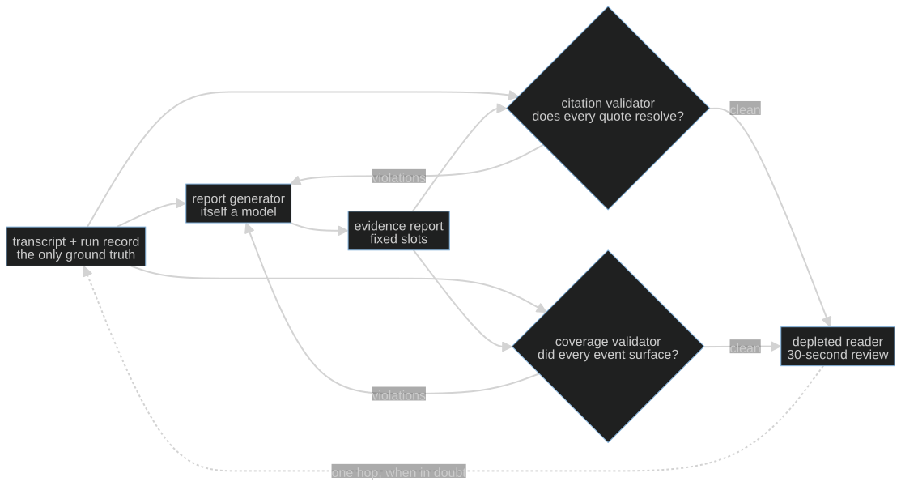

S09-evidence-reports — The thirty-second debrief
Carried in: cafe/trace.py from S08 — you can record a real shift and replay it exactly.
Today you ship: cafe/report.py — a debrief a tired reader can trust, with the validators that
keep it honest.
What this teaches: how to write for a depleted reader, why a claim without a verbatim citation is
a rumour, why the two ways a report lies need two complementary validators, and why a failed run still
gets an honest report.
Time: 20–40 min active reading, 30–60 min notebook work, 5–10 min self-check.
These are planning estimates, not measured learner timings. Prerequisites: S02 (golden sets and
deterministic checks), S08 (the trace and replay this session reads).
Hands-on: toy.py — runs against your model.
The hook
It is 23:40. Someone has to read what happened on this shift and decide whether to change anything tomorrow. They will give your report thirty seconds.
A chronological transcript fails that test. So does a cheerful summary — and the cheerful one fails worse, because every sentence in it can be true while the report as a whole lies by omission.
The promise
By the end of this session you can generate a debrief whose every claim resolves to a real turn, and you will have built the two validators that catch the two different ways a report lies: the quote that was never said, and the safety event that quietly never happened.
The theory in depth
Write for the depleted reader
The reader is tired and accountable. They need six things, fast:
| slot | what it answers | where it comes from |
|---|---|---|
goal |
what the customer wanted | the first user turn, quoted |
outcome |
how the shift ended | the run record's stop_reason |
moments |
what happened | events read off the conversation |
safety |
anything safety-relevant | the safety subset of the same events |
next_step |
what to do next | the last thing said to the customer, quoted |
cost |
what it cost | model calls, turns, tokens, model latency |
write_report produces exactly those slots — not a narrative. It is a deterministic stand-in for the
LLM writer you would ship; two rules make it honest by construction: quotes are copied from the
conversation, and the outcome is read from the run record, never inferred from how the last
message felt.
A claim carries a turn and a verbatim quote
log_events reads events off the trace rather than off a vibe: an allergen check that reported
contains: true is a safety event, a check that cleared an item is an observation, a fired
ticket is a milestone, an item priced while sold out is a safety event, and a shift the turn cap
cut short is a setback carrying the last spoken turn. Each event quotes the raw tool result — the
same string the loop wrote into the message list — so the quote resolves verbatim to its turn by
construction. For the two free-text slots, _first_sentence and _last_sentence take a prefix and a
suffix rather than a paraphrase.
That makes the report checkable:

validate_citations re-reads the trace and confirms every quote appears inside the turn it cites,
and that every number — stop_reason, turns_used, model_calls, the cost block — matches the run
record. An LLM writing the same report will tidy a quote into something nicer and round a stopped
shift up to a clean finish; the validator catches both because it compares bytes and integers, not
impressions.
The two lies are different, so you need both validators
| lie | shape | caught by |
|---|---|---|
| fabrication | a quote that was never said, a wrong turn, an outcome rounded up | validate_citations |
| omission | every sentence true, a safety event quietly absent | validate_coverage |
validate_coverage compares the report against the events the harness logged, not against the report
itself: every event must surface in moments, and every event whose type starts with safety must
reach the safety slot. That is the only way to catch a lie that leaves no false sentence on the
page. A report that passes one validator and fails the other is still dishonest — honesty is the
conjunction. Neither validator is a judge: they check provenance, not quality, and inventing a
quality score here is S12's problem, not this module's.
A failed run still gets a report
A shift that hit the turn cap is not an excuse to write nothing. capped_shift_trace() is one such
trace kept as teaching material: the allergen check found milk in the croissant, the model asked a
clarifying question too many, and the harness stopped the shift before the ticket was fired. The same
generator and the same validators run over it; the outcome slot simply says so
(OUTCOME_NOTES["turn_cap"] begins with INCOMPLETE). Absence is stated, never silent: when no
safety event exists, the rendered report says "none logged".
Build (in the notebook, predict first)
Open toy.py. Same endpoint
configuration as S06.
- Run a real shift and read its events. Three scripted customer lines, one live run, then
log_events(shift_run)prints what the harness can actually see. Count the safety events before you read the report. - Predict the honest report. Before running the next cell: will either validator report a violation? If the answer is obviously "no", ask what that proves — and what it does not.
- The omission.
reassuring_variantdrops the safety events and keeps everything else. Watchvalidate_citationswave it through — nothing on the page is false — andvalidate_coveragerefuse it. That asymmetry is the lesson. - Your turn — the thirty-second test. Write
attempt_thirty_second_test(report): return the slots that are missing or empty. It is a proxy for the reader, not a judge — and knowing the difference is the point. The reference is behind a reveal switch; flip it after you attempt. - The capped shift. Run the same generator and validators over
capped_shift_trace()and read theoutcomeslot. A failed run gets a report too.
Checkpoint — the number you bank
Generate a debrief for each scenario in your S02 golden set and record how many pass both validators. Write it down with the model name. Anything short of all of them is a generator bug, not a reporting style choice — a shift you cannot debit honestly is a shift you cannot defend.
State of the art (as of August 2026)
| Development | Status | Take |
|---|---|---|
| Anthropic citations | already in this path | Server-side citations point each claim at a source span; your validator is the same contract enforced locally, against your own trace. |
| OpenAI structured outputs | adopt | The six slots are a schema. Making the report a typed object is what lets the validators read it instead of parsing prose. |
| Attributed QA (Bohnet et al.) | recognize | Long-standing evidence that attribution and answer quality are separate axes — which is why citations alone never certify a report. |
| RAGAS | adopt | Faithfulness and answer-relevance metrics as code. Useful for the semantic tier; it does not police coverage of harness events, which stays yours. |
| ARES | recognize | A framework for judging context relevance, answer faithfulness and answer relevance with a calibrated judge. Read it before you let a model grade your reports. |
| Vectara hallucination leaderboard | recognize | A public measurement of summarization hallucination rates. A reminder that "summarize the trace" is a model call with a known error rate. |
| OpenAI evals | adopt | The registry pattern for turning your validator into a suite entry. The report generator's contract belongs in the eval suite, not in a reviewer's memory. |
| Hallucination-free summaries via prompt instruction alone | ignore | Asking the model to "only use the transcript" is advice, not verification. The validator is what makes the claim checkable. |
Annotated readings
- Anthropic, citations. Extract:
how a cited span is represented and what happens when the source does not contain the claim. Compare
it with
_check_quote. - Bohnet et al., Attributed Question Answering. Extract: the separation between attribution and quality, and how they measure each. That separation is the reason this session ships two validators and no score.
- RAGAS docs. Extract: the definitions of faithfulness and relevance. Then note what none of them measure: whether an event the harness logged was omitted from the summary.
- ARES, arXiv:2311.09476. Extract: what has to be true before a model-based judge may grade anything — calibration data, agreement measurement, a stated threshold. S12 comes back to this.
cafe/report.py, thewrite_reportdocstring. Two rules, one paragraph. Read them and then find the line of code that enforces each.
Misconceptions and failure modes
- "The report is accurate, so it is honest." Accuracy is per sentence. Omission is a whole-document
defect:
reassuring_variantkeeps every sentence true and still lies. - "A citation validator is enough." It catches fabrication, not absence. Without coverage, deleting the awkward event is a clean pass.
- "The model wrote a nice summary, so the summary is right." A tidy paraphrase is the most common fabrication precisely because it reads well. Compare bytes, not impressions.
- "A run that failed does not need a report." Failure is the run you most need on the record. The
outcome slot says
INCOMPLETEand the attempt log stays attached. - "Quote roughly; the meaning is what counts." Then the validator cannot check anything, and neither can the reader. Quotes are copied, not remembered.
- "These validators grade quality." They check provenance and coverage. Quality belongs to a calibrated judge (S12), and calling a provenance check a quality score is its own small lie.
Self-check
Why does `reassuring_variant` pass the citation validator?
Because nothing it keeps is false: the remaining quotes still resolve to their turns and the numbers still match the record. It simply removed the safety events. That is exactly why a citation check alone cannot certify a report — it polices the sentences that are present, not the events that are missing.What does the coverage validator derive its ground truth from, and why does that matter?
From the events the harness logged (`log_events`), not from the report. Deriving it from the report would make the check circular — it could only confirm that the report agrees with itself. This is the only way to catch an omission, which leaves no false sentence behind.How are the quoted spans guaranteed to resolve verbatim?
Because they are copied from the conversation rather than paraphrased: `log_events` quotes the raw tool result the loop wrote, and the free-text slots take a first or last sentence, which is a prefix or suffix of the original string. The validator then checks the quote is a substring of the cited turn.A shift hits the turn cap. What does its report say, and why is that not optional?
`outcome.stop_reason` is `turn_cap` and its note begins `INCOMPLETE`. The same generator and the same two validators run over it, with the safety event and the closing turn quoted from the trace. Omitting the report would hide the run that most needs a decision made about it.What this unlocks
You can describe one shift honestly, and you can prove the description resolves to the trace. You still have no idea which failures recur — every trace gets read on its own. S10 — Error analysis turns a pile of real traces into open-coded notes, a labeled taxonomy, and a top category that becomes a permanent eval task.